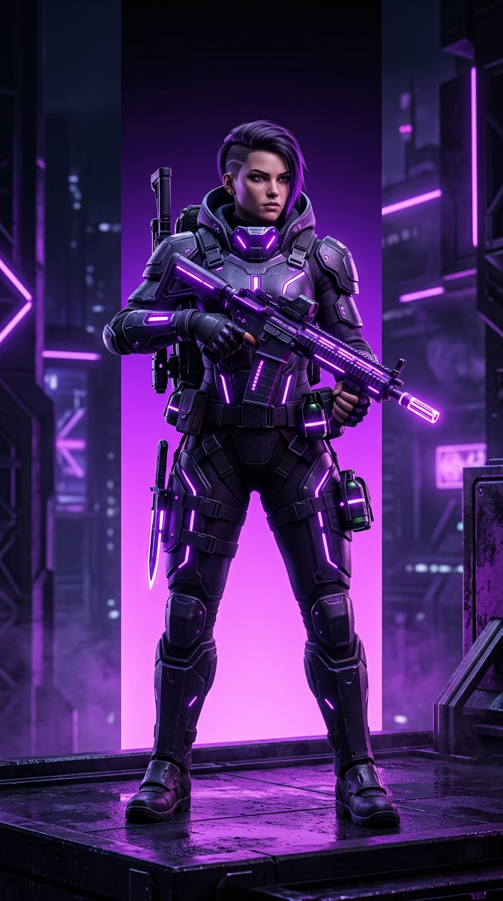
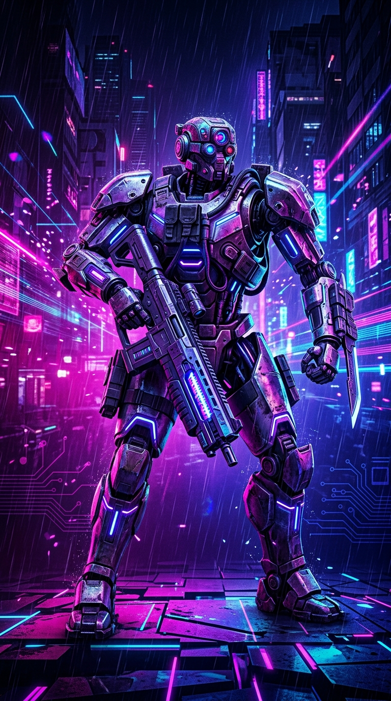

O Mundo dos Games é um espaço criado especialmente para todos aqueles que são apaixonados pelo universo dos videogames, da tecnologia e do entretenimento digital. Os jogos eletrônicos fazem parte da vida de milhões de pessoas e, ao longo dos anos, deixaram de ser apenas uma forma de diversão para se transformar em uma enorme indústria, capaz de criar histórias marcantes, personagens inesquecíveis e experiências cada vez mais impressionantes. Aqui, você encontrará conteúdos sobre diversos tipos de jogos, incluindo ação, aventura, RPG, estratégia, corrida, esportes, terror, sobrevivência e muitos outros gêneros. A proposta do Mundo dos Games é reunir informações interessantes em um único lugar, permitindo que jogadores possam conhecer melhor seus jogos favoritos e também descobrir novas experiências para aproveitar.


Sobre o mundo dos games
O mundo dos videogames está sempre mudando e trazendo novidades para os jogadores. Todos os anos, novos jogos são lançados para diferentes plataformas, enquanto títulos antigos continuam conquistando novas gerações de jogadores. Além dos próprios jogos, também existem constantes evoluções em consoles, computadores, celulares, acessórios, gráficos, inteligência artificial e outras tecnologias relacionadas ao entretenimento digital. No Mundo dos Games, você poderá acompanhar essas transformações e conhecer um pouco mais sobre as novidades que estão movimentando a comunidade gamer. Desde grandes lançamentos até jogos independentes que podem passar despercebidos pelo público, nosso objetivo é apresentar diferentes possibilidades para quem gosta de explorar esse universo.
Um dos jogos que merece destaque nesse universo é **Super Mario 3D World**, desenvolvido pela Nintendo. O jogo faz parte da famosa franquia Super Mario e apresenta uma aventura de plataforma em ambientes tridimensionais, onde os jogadores podem controlar personagens como Mario, Luigi, Peach e Toad. Durante as fases, é necessário enfrentar inimigos, superar obstáculos, coletar moedas e encontrar itens enquanto se busca chegar ao final de cada nível. Um dos principais destaques de Super Mario 3D World é a possibilidade de jogar com até quatro pessoas ao mesmo tempo, tornando a experiência ainda mais divertida e permitindo que os jogadores trabalhem juntos ou disputem entre si para conseguir a maior pontuação. Além disso, o jogo possui diversos mundos e fases com diferentes desafios, cenários e inimigos, fazendo com que a aventura permaneça variada ao longo da jornada. Entre os itens disponíveis está o Super Sino, que transforma o personagem em Mario Gato e permite realizar movimentos especiais, como escalar paredes. Com sua jogabilidade simples de aprender, mas cheia de desafios, Super Mario 3D World é uma opção interessante tanto para jogadores mais experientes quanto para quem está começando a conhecer a franquia.
O Universo dos Games
Principais gêneros de jogos
- Ação — Jogos de combates, desafios e momentos rápidos que exigem reflexos e habilidade do jogador.
- Aventura — Jogos que valorizam a exploração, a descoberta de novos lugares e o desenvolvimento de histórias.
- RPG — Jogos nos quais o jogador pode desenvolver personagens, adquirir habilidades, conseguir equipamentos e participar de histórias elaboradas.
- Esportes — Jogos que simulam modalidades esportivas como futebol, basquete, corrida e diversos outros esportes.
- Terror — Jogo focado em criar tensão e medo por meio de ambientes sombrios, sustos e ameaças.
O que você pode encontrar no Mundo dos Games
- Notícias sobre lançamentos — Informações sobre novos jogos, atualizações e grandes lançamentos que chegam ao mercado.
- Curiosidades sobre jogos — Fatos interessantes, segredos e detalhes que muitas vezes passam despercebidos pelos jogadores.
- Análises e avaliações — Opiniões sobre jogos, destacando seus pontos positivos, negativos, gráficos, jogabilidade e outros aspectos.
- Dicas para jogadores — Sugestões e informações que podem ajudar os jogadores a melhorar seu desempenho ou descobrir novas possibilidades dentro dos jogos.
- Guias e recomendações — Listas e sugestões de jogos, gêneros e experiências que podem valer a pena conhecer.